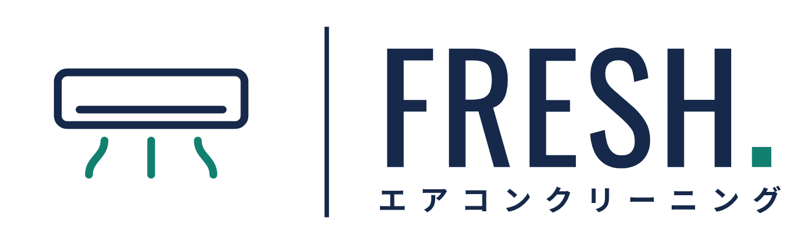

FOR BUSINESS｜不動産管理会社・オーナー様へ
埼玉県を中心に、不動産管理会社・賃貸仲介会社・リフォーム会社・オーナー様から、空室クリーニング、原状回復工事、エアコンクリーニング（家庭用・業務用）のご依頼をお受けしています。退去立会いから工事、清掃まで、まとめてご相談ください。
・こんなお困りごとはありませんか
「今の業者が手一杯」
退去が重なる時期に、清掃の手配が追いつかない。
「入居時のクレームが多い」
清掃の仕上がりについて、新しい入居者から指摘が入る。
「手配先がばらばら」
清掃、クロス、床、設備交換の依頼先を、毎回探している。
「状況が見えにくい」
現地に行かなくても、作業の内容と仕上がりを確認したい。
その悩み、INcrein がまとめて
引き受けます。
退去立会いから工事、清掃、報告まで。窓口はひとつです。
まずは1件、見積を依頼する・INcrein にできること
退去立会い、内装や設備の入れ替え工事、ハウスクリーニングまで、まとめてお引き受けします。工事と清掃の順番もこちらで整理します。
作業前後の写真と作業報告書をご用意できます。現地に行かなくても、仕上がりをご確認いただけます。
管理物件をまとめてのご依頼や、定期的なご発注にも対応します。ボリュームや頻度に応じた条件もご相談ください。
・ご依頼いただけるサービス
退去立会い
入居者の退去に立ち会い、室内の状態を確認します。
原状回復工事
クロス・床の張り替え、設備交換、補修を手配します。
空室クリーニング
工事のあと、キッチン・浴室を含めて仕上げます。
完了報告
作業前後の写真と報告書でお知らせします。
WHiTE. total cleaning
退去立会いから、クロス・床の張り替え、設備交換、小規模リフォーム、空室クリーニングまでまとめてお引き受けします。
税別
FRESH. aircleanservice

空室の壁掛けエアコンから、店舗・オフィスの業務用エアコンまで。空室クリーニングと同時のご依頼もできます。
税別
・お取引について
法人のお客様の
ご発注の流れに合わせます。
締め日やお支払い方法などのご要望は、ご相談ください。
・ご相談の際にお知らせいただきたいこと
物件の所在地（市区町村まで）、間取りや広さ、退去日やご希望の時期、鍵の受け渡し方法をお知らせください。エアコンの場合は機種と台数、型番の写真があるとスムーズです。お見積りと現地チェックは無料です。お問い合わせには2営業日以内にご連絡します。
CONTACT
お急ぎのご依頼や、複数物件をまとめてのご相談も承ります。お電話でのご相談をご希望の場合は、電話番号とご都合のよい時間帯をフォームにご記入ください。こちらからお電話します。受付時間 9:00〜18:00（夜間・土日祝はご相談ください）